In this project, I selected a simple restaurant online ordering site to practice the
workflow of redesigning a simple website. I first identified the usability problems with the website and
then check its accessibility with WebAIM WAVE. Secondly, I utilized both low-fidelity and high-fidelity
prototyping to visually redesign the webpage. Finally, I applied HTML and CSS to conduct a responsive
redesign of the webpage.
Background
Chongqing House is a popular place in Providence as one of the few local Chinese restaurants. However, my
friends and I had to frequently order food online because of its distance from Brown University. Moreover,
They do not work with any delivery platforms such as Uber or DoorDash, so we had to order directly from its
custom-made ordering website.
As a restaurant ordering site, I think images are more effective than words in highlighting the deliciousness
of the food. I chose the website because I think the design is text-heavy and the layout is outdated.
Go to https://flyingtiger777.github.io/CS1300_Redesign-Webdev/
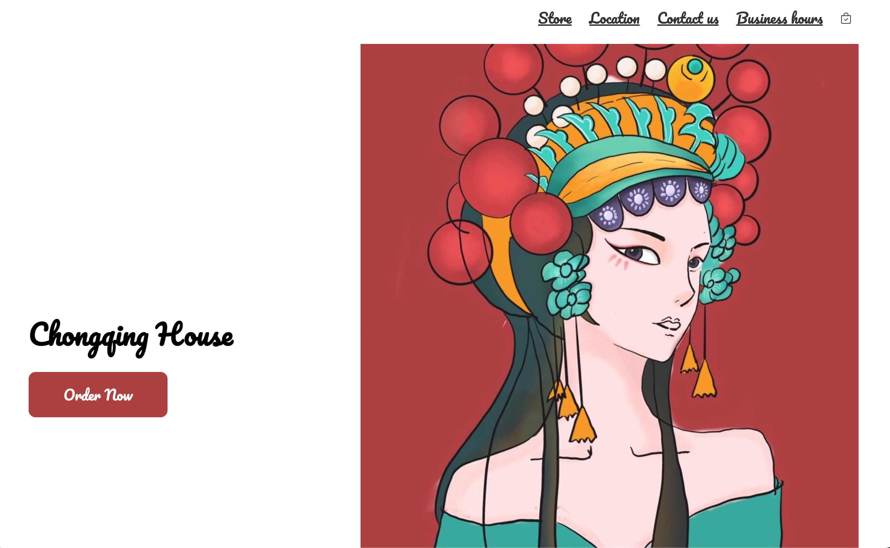
Usability problems
Consistency At the center of the webpage, it includes an introduction to the restaurant with the big
title “Welcome to Chong Qing House”. However, in the detailed description, it mentions a “Tokyo
restaurant” and “high-quality fresh sushi”, which are clearly contradictions that leave the users
wondering if they are viewing the wrong website.
flexibility and efficiency of use The categories section on the left could provide flexibility to
experienced users, but it might cause confusion to novice users. The users come to the website to order
food online, so the first thing they are most likely to notice is the huge red order online button.
After clicking the red button, it shows an identical menu to the categories section. Then, it is a bit
weird to have two identical menus showing on screen simultaneously, and if you click the menu at the
center of the screen, it redirects you to the same page associated with the categories section, which
makes the red button and menu section meaningless.
Recognition If you only look at the interface and don't move the mouse over the target, it's
difficult to notice that the poster on the right is clickable and takes you to the home page. If you are
currently on the homepage, clicking it will have no effect. Similarly, it is not immediately evident
that the texts in green are clickable in the working hours display.
Error prevention Although it shows “closed” in the working hours' display section, the whole process
of online ordering is not disabled. It only offers error messages when you proceed to check out, which
doesn’t necessarily eliminate error-prone conditions.
Accessibility
According to WebAIM WAVE, there are 3 errors and 22 alerts. The webpage has a missing form label error and a
multiple form label error, which may cause screen reader users to miss the function or purpose of that form
control. It also has an empty button error but it is a dummy object that is invisible to the users, which I
don’t think it will cause too much trouble. Besides, I am more interested in the alerts that are
automatically detected. For example, it has 13 very small texts alert. As I mentioned before, the webpage is
too text-heavy. Also, it has many redundant link errors, which take place in the working hours section. It
links all the display time to the LOCATION&HOURS section, which I think is superfluous but not a big deal.
Low-fidelity Wireframing
Scroll to view the full Wireframing
Desktop Wireframing
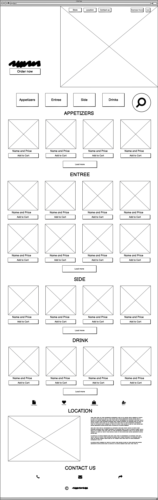
Tablet Wireframing
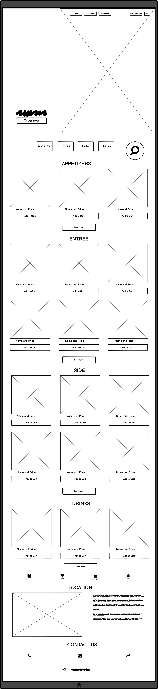
Phone Wireframing
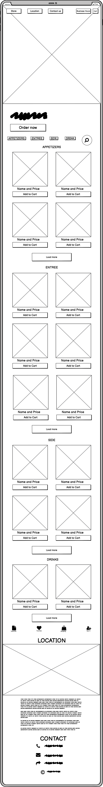
Annotation
To fix the consistency error in the restaurant introduction part, I simply removed the text box and replaced
it with a large image of Chongqing culture. I believe the image will be more appealing to the user and will
also indicate what type of food the restaurant serves: Chinese food.
For efficiency of use, I also integrated the categories section and the menu page to show the photo menu
directly on the main page, making it easier for users to find the menu and order meals. By clicking the menu
buttons, it will direct the users the corresponding sections such as entree or drinks.
Since I have simplified the menu display, I don’t have to include the picture linked to the home page now,
which will eliminate the recognition problem.
I used both overlay and hover effects to avoid dense texts and only show the prices and names of the food if
the users find the image of food attractive and hover over the image.
Finally, I used more images to avoid small text errors. I also displayed the business hours and location at a
less visible place because I think the most important function of the website is to order food, and most
novice users find the online ordering site from third-party applications such as google maps or yelp, which
already include business hours and location information. If they want to check the business hours and
location, they can still find them somewhere on the website. And experienced users have already known the
business hours and location, so the information is not that important.
High-fidelity Wireframing
Design Style Guide
I divide the entire page into different views and skip the repeating menu section. For example, if I've
already shown the appetizers menu part, I go straight to the end of the menu.
Scroll to view the full Wireframing
Desktop Wireframing
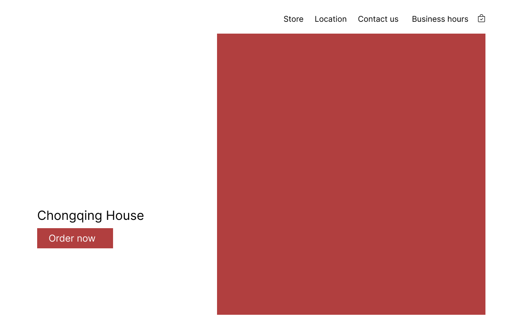
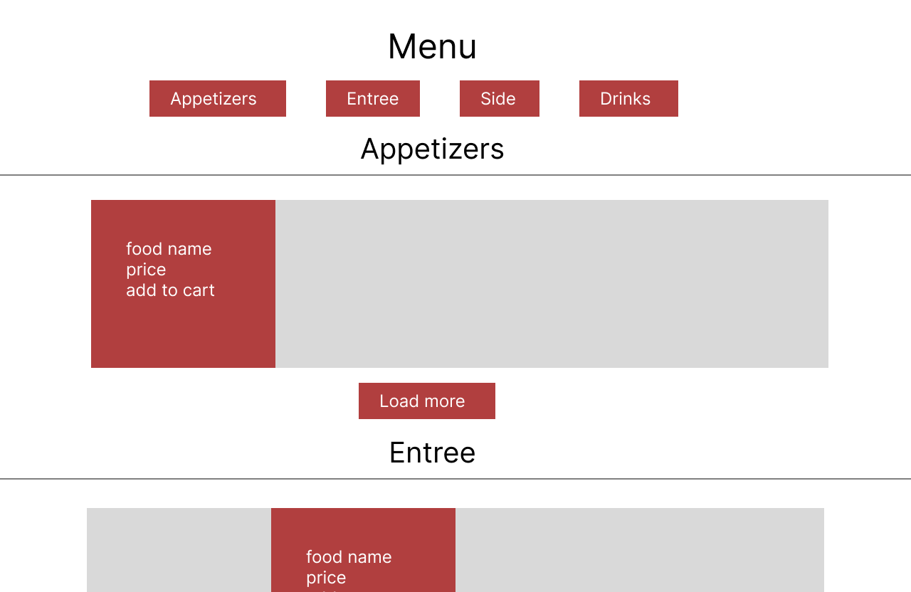
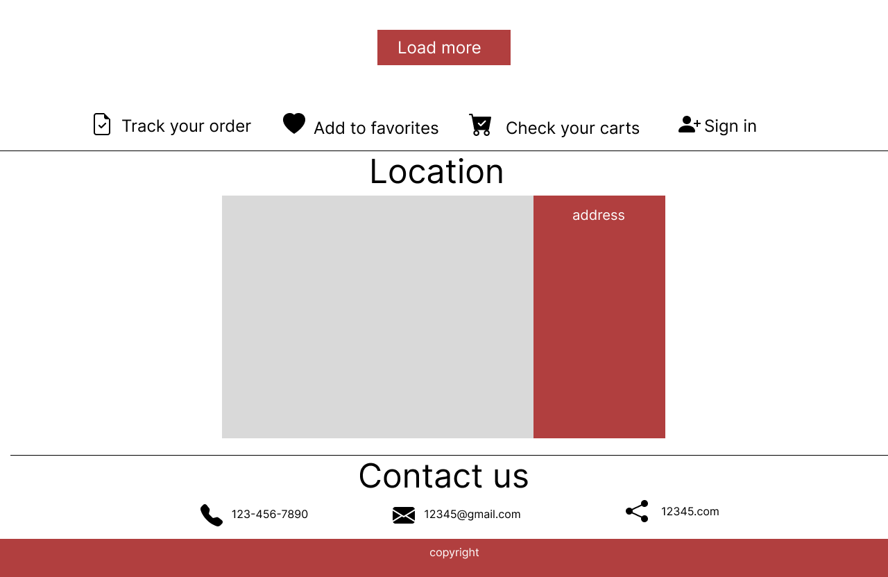
Tablet Wireframing
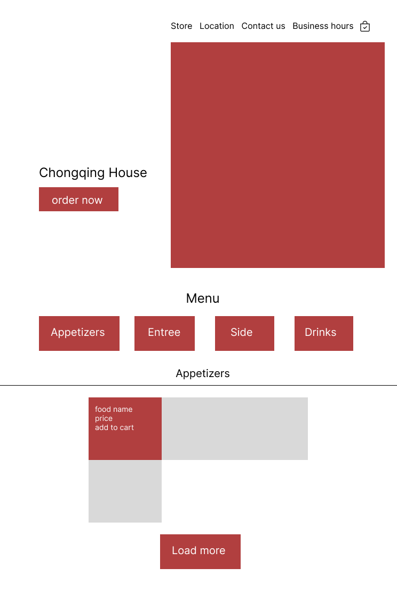
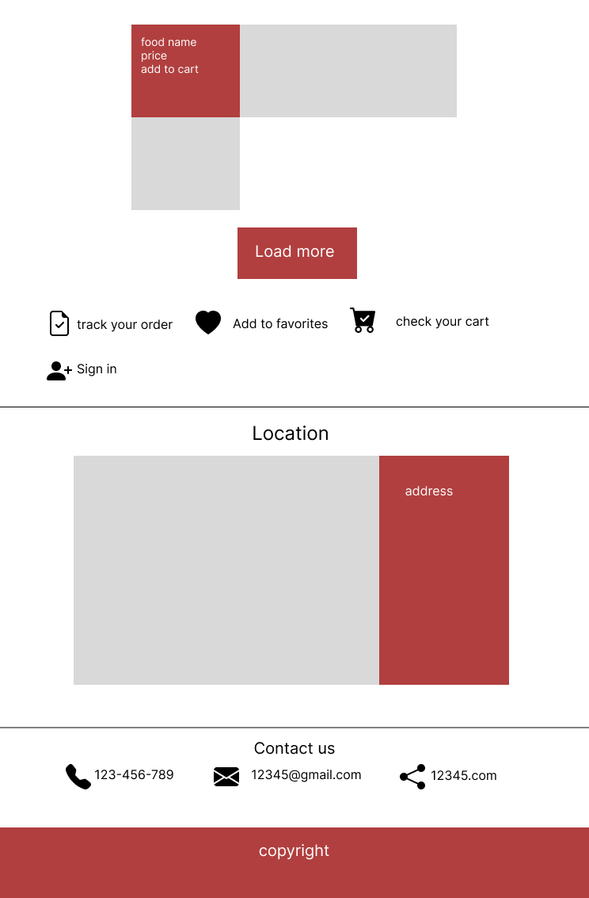
Mobile Wireframing
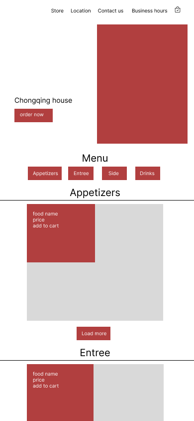
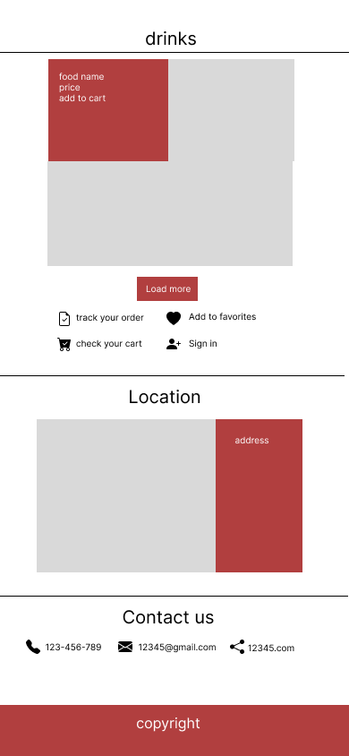
Annotation
Flexbox and grid I am using a combination of flexbox and grid to make the webpage responsive to
different screen sizes. For example, for the four buttons (appetizers, entree, side, drinks) under
the menu section, I am using a flex display with a row direction, so the buttons will automatically
convert to two rows when the screen size is small. Similarly, for the display of menu items, I am
using a grid so that when the screen size changes, the number of items in the row will change
correspondingly. When the webpage is viewed on a desktop, there are 4 items in a row while there are
only 3 or 2 when the size of the screen decreases.
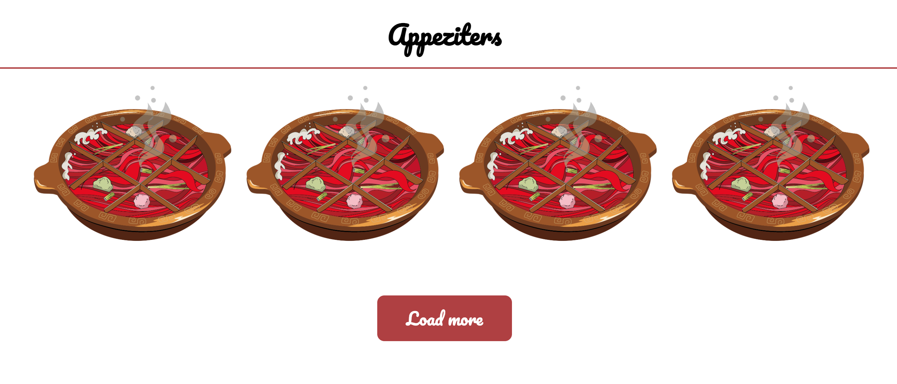
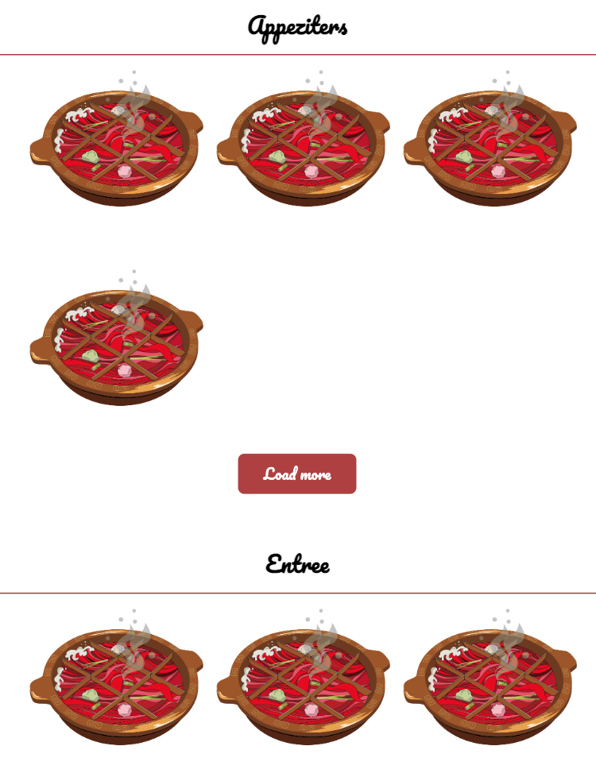
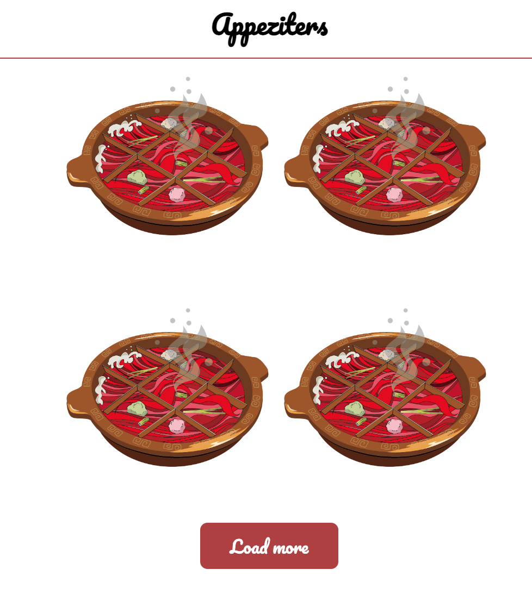
Different menu layouts
Space adjustment With the help of flex display and justify-content, the space between the
elements will automatically change according to the changes in screen size.
Hover effect The colors of buttons or elements in the navigation bar will change when the users
hover over them. Besides, to minimize the text on the webpage, I am using an overlay and hover
effect on the items in the menu, so the prices and names of the food will occur when users hover
over them.